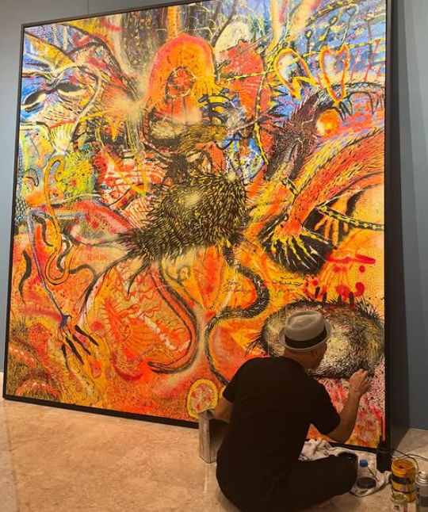
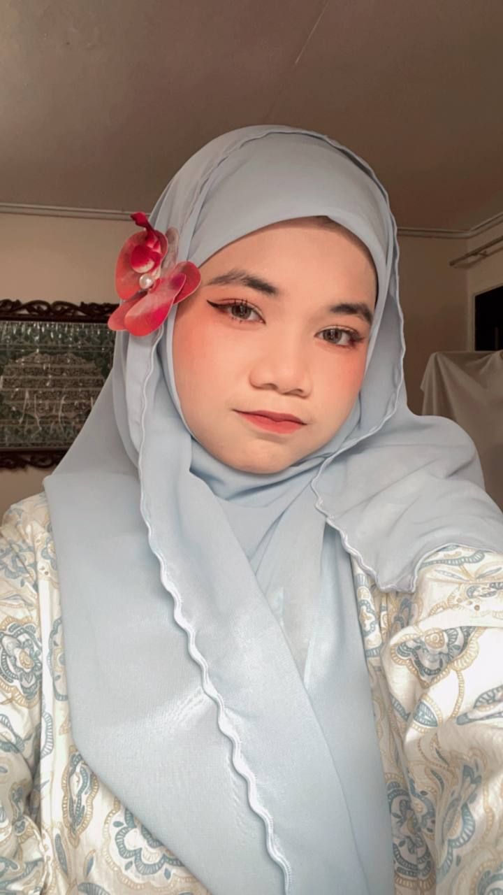

Malsyian Culture Arts
Malsyian Culture Arts
BLOGS

Eli Gee
Art, to me, is more than just expression — it's remembrance. Every stroke I paint carries a story from my childhood, my roots, and the vibrant culture I grew up in. Warna Pusaka, Emas Tanahair, and Ukiran Halus are not just paintings — they are echoes of traditions I hold close, reimagined in a language today's eyes can understand. As a Malaysian artist, my mission is to keep our heritage alive through colour, texture, and emotion. I want viewers to not only see my work, but to feel the pride, the struggle, and the beauty of our collective identity.
22 June,25

Jai
I am Jalaini Abu Hassan, though many know me as Jai. Through art, I investigate the pulse of Malaysian life — the textures of kampung memory, the clash of tradition with rapid modernity, the quiet resilience of the ordinary rakyat. My works reflect stories carved from both personal experience and collective memory, woven into canvas with soot, charcoal, found objects, and industrial hues. As an artist and educator, I believe art must challenge, provoke, and remember. In every mark I leave, I am documenting the soul of a shifting Malaysia — not just for now, but for generations ahead.
22 June,25

Zulfa Safeeya
Art, to me, is a unique expression that flows from the eyes to the mind, then through the hand — my hand, the main tool that brings each vision to life. I find joy in creating bold, vibrant works that carry emotion, meaning, and a touch of my own perspective.
“This portal leads to pure Meowness” sticky note included by artist for your own safety.
22 June,25